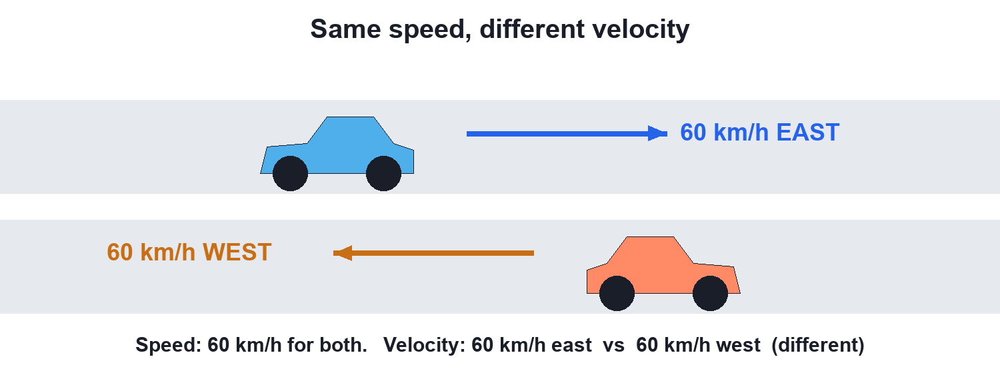
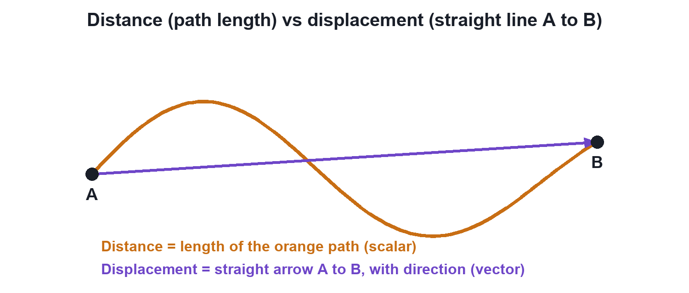
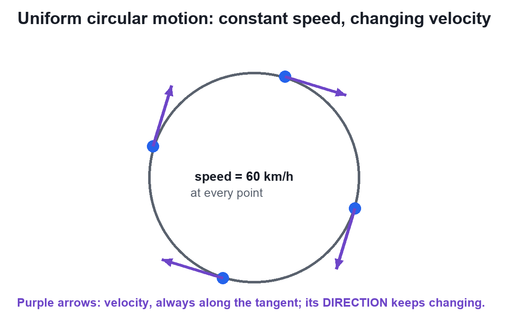
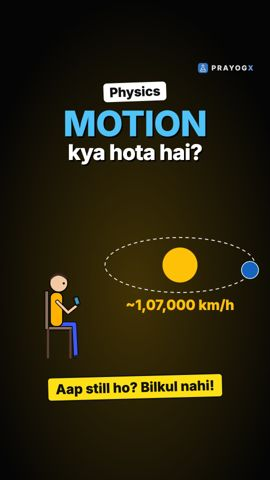

Speed vs Velocity
Video not playing? Watch on Instagram · YouTube
Two cars at the same 60 km/h can have different velocities. Speed tells how fast; velocity also tells which way.
Download the short notesPDF, 214 KB · solved examples, practice set and answer key Up next in this chapter
 Average Speed vs Average VelocityWalk 4 km to school and back in an hour: average speed 4 km/h, average velocity zero. One uses total distance, the other displacement.Physics · simulation
Average Speed vs Average VelocityWalk 4 km to school and back in an hour: average speed 4 km/h, average velocity zero. One uses total distance, the other displacement.Physics · simulation
Key points
- Speed = distance ÷ time: a scalar (no direction).
- Velocity = displacement ÷ time: a vector (has direction).
- Same speed, opposite directions → different velocities.
- Constant speed on a circle → changing velocity (direction changes).
- SI unit of both: m/s; 1 km/h = 5/18 m/s.
The idea in one minute
Two cars on a highway both read 60 km/h. One heads east, the other west. Their speed is the same, but their velocity is not, because velocity includes the direction of motion.

Distance and displacement come first
Distance is the length of the actual path. Displacement is the straight arrow from start to finish, with a direction. Speed is built on distance; velocity is built on displacement.

Speed = distance ÷ time Velocity = displacement ÷ time
The twist: constant speed, changing velocity
A car going round a circular track at a steady 60 km/h never changes its speed, but its direction changes at every moment, so its velocity keeps changing. This is uniform circular motion, an accelerated motion.

Speed vs velocity at a glance
| Point | Speed | Velocity |
|---|---|---|
| Formula | Distance ÷ time | Displacement ÷ time |
| Quantity | Scalar | Vector |
| Direction | Not needed | Must be stated |
| Can be negative? | No | Yes |
| Round trip average | Non-zero | Zero |
| SI unit | m/s | m/s |
Try it yourself
Goal: See when speed and velocity agree, when they differ, and why constant speed on a circle still means changing velocity.
- Pick a path: straight, there-and-back, zig-zag or circle.
- Press Play (or drag the time slider) and watch the distance and the displacement arrow.
- Compare the average speed and the average velocity readouts.
- On the circle, watch the purple velocity arrow turn while the speed stays the same.
Quick quiz
5 questions. Choose an answer for each, then submit to see your score and the explanations.
More from Motion

Motion: Chapter IntroductionSitting still? With the Earth you are moving at about 1,500 km/h. Motion is a change of position with time, measured from a reference point, and this chapter gives the tools to describe it.Physics Rest and Motion: Motion is RelativeAre you moving right now? It depends on who is watching. Rest and motion are always measured from a reference point.Physics · simulation
Rest and Motion: Motion is RelativeAre you moving right now? It depends on who is watching. Rest and motion are always measured from a reference point.Physics · simulation Distance vs DisplacementDistance counts the whole path you walked; displacement only looks at the straight line from start to end, with its direction.Physics · simulation
Distance vs DisplacementDistance counts the whole path you walked; displacement only looks at the straight line from start to end, with its direction.Physics · simulation